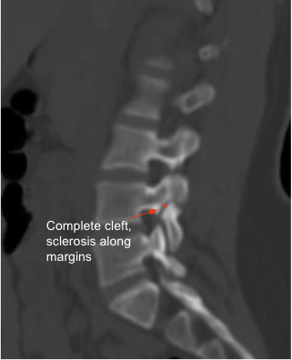

Adapted from: Radswiki T, Gaillard F, Hacking C, et al. Spondylolysis. Reference article, Radiopaedia.org (Accessed on 04 Jan 2026) https://doi.org/10.53347/rID-12262
1) Description of Measurement
Assessment of the pars interarticularis evaluates for spondylolysis, stress reactions, or chronic non-union, which are common in young athletes, degenerative spondylolisthesis, and in association with lumbosacral transitional vertebrae (Bertolotti’s syndrome). Key features include:
These features distinguish acute stress fractures from chronic pars defects.
2) Instructions to Measure
3) Normal vs. Pathologic Ranges
4) Important References
Hammerberg KW. New concepts on the pathogenesis and classification of spondylolisthesis. Spine (Phila Pa 1976). 2005 Mar 15;30(6 Suppl):S4-11. doi: 10.1097/01.brs.0000155576.62159.1c.
Campbell RS, Grainger AJ, Hide IG, et al. Juvenile spondylolysis: a comparative analysis of CT, SPECT and MRI. Skeletal Radiol. 2005 Feb;34(2):63-73. doi: 10.1007/s00256-004-0878-3. Epub 2004 Nov 25.
Pereira Duarte M, Camino Willhuber GO. Pars Interarticularis Injury. 2023 Feb 5. In: StatPearls [Internet]. Treasure Island (FL): StatPearls Publishing; 2025 Jan–.
Rakauskas TR, Gallup S, Mohamed AA, et al. An update on the prevalence and management of Bertolotti's syndrome. Front Surg. 2024 Dec 12;11:1486811. doi: 10.3389/fsurg.2024.1486811.
5) Other info....
Defect width > 3 mm with sclerosis strongly indicates chronic non-union.
Early stress reactions may be CT-negative; MRI STIR is more sensitive for marrow edema.
Bilateral pars defects commonly precede isthmic spondylolisthesis.